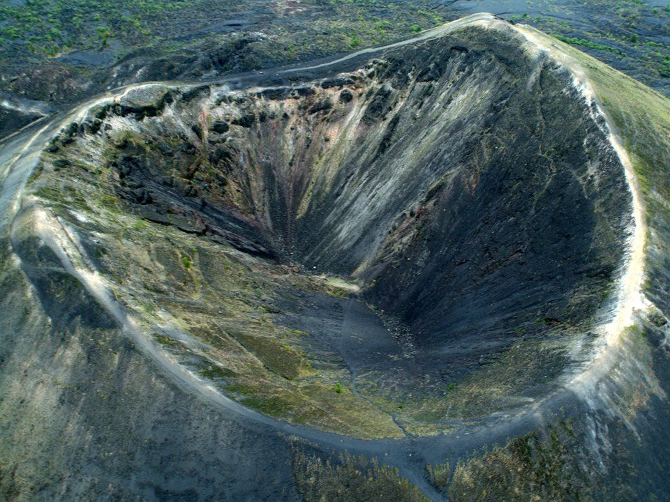
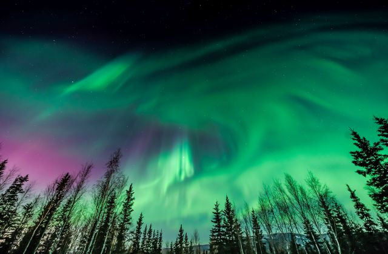
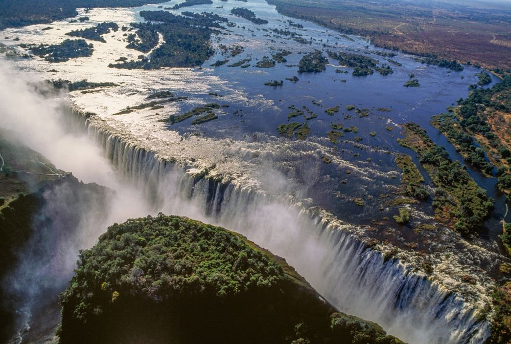
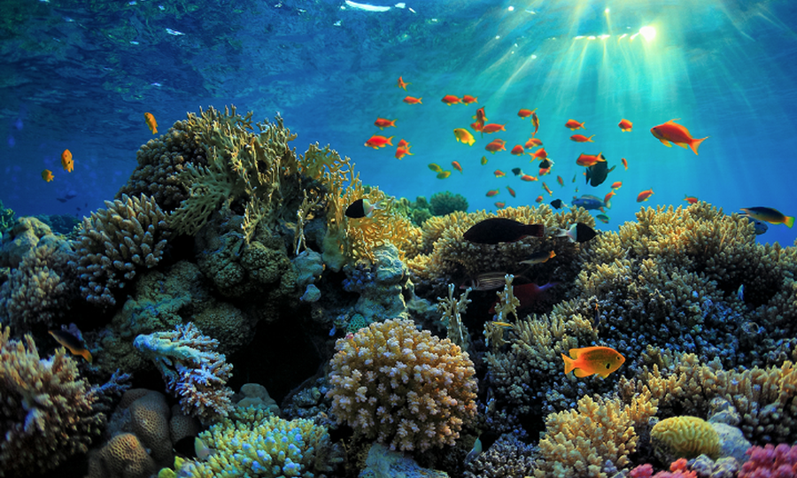

The Seven Wonders of the World demonstrate humanity's most impressive creations such as the Taj Mahal and the statue
of Christ the Redeemer. In the Seven Wonders of the Ancient World, ancient masterpieces such as the Temple of Artemis and the
Hanging Gardens of Babylon are remembered. However, the Seven Wonders of the Natural World are proof — if needed at all— that
Mother Nature is just as talented an architect. Compiled by CNN and Seven Natural Wonders in 1997, this list spans all 7
continents and includes some of the greatest heights of the earth and depths of the oceans, some lesser-known sites, and
some well-known features that you may have already visited yourself. While the locations of the world's most breathtaking
wonders are often disputed,
these seven locations are generally agreed upon as being among the best natural sights anywhere in the world.
Parícutin
One of the lesser-known entries on this list, Parícutin is just as impressive as many more well-known landmarks. It
is an example of a near-perfect cinder cone volcano located in Michoacán, Mexico. One thing sets Parícutin apart from the
many others of its kind around the world. Modern scientists were able to observe and document every stage of its lifespan –
from creation to extinction – as it happened. Throughout the 1940s and 1950s, visiting experts and residents of the region w
ere able to witness the volcano growing from a fissure in a cornfield to a mountainous height of 1,391 ft. After erupting f
or 19 years, the volcano went quiet in 1952. It is not expected to erupt again.

The Grand Canyon
Situated in Arizona in the USA, the 277-mile long Grand Canyon is truly awe-inspiring. The canyon, which measures
up to a mile deep and some 18 miles wide at its broadest, was formed over time by the unstoppable course of the Colorado
River. Scientists estimate that the river first carved out its path more than 17 million years ago. In recent years, increased
safety measures have prevented visitors from approaching the edge of the canyon. Still, the Grand Canyon site continues to be
a popular tourist destination. A distant glimpse of this powerful and majestic canyon is enough to give memories of a lifetime.
Northern Lights
Seen in both the polar regions of the planet, this dazzling light show is aptly referred to as the Northern
(or Southern) Lights. Unlike most of the entries on this list, you can view an aurora from many different locations
around the world. The higher the latitude, the more likely you are to see them. The Northern Lights effect is brought
on by charged cosmic particles entering and interacting with the Earth's atmosphere. It causes vivid colors to be pa
inted across the night sky.
For centuries, humans have speculated endlessly about the cause of this night-time display of colors. Refere
nces to the lights have been found in texts from Ancient Greece, stories from Norse Mythology, and sourc
es from Medieval England.

Victoria Falls
As the Zambezi River crosses the border between Zambia and Zimbabwe, its waters descend 355 feet to
form the astonishing Victoria Falls. The waterfall was named in 1855 by Scottish explorer David Livingst
one after Queen Victoria, the then reigning English monarch. The indigenous name Mosi-oa-Tunya or "The S
moke that Thunders" is still in use locally. In 2013, the government of Zimbabwe announced plans to offic
ially rename the falls as such. Victoria Falls is not the highest o
r the broadest waterfall on the planet, but upon considering both attributes, it qualifies as the largest.

Harbor of Rio de Janeiro
Guanabara Bay is a 19-mile stretch of land to the east of Rio de Janeiro, the second-l
argest city in Brazil. More than 100 islands are situated around the bay, including the c
ar-free Paquetá Island, and Villegagnon Island, the site of the Brazilian Naval School.
In the past, the bay hosted a vibrant and diverse ecosystem. In recent decades, howeve
r, the perils of urbanization have wreaked havoc on this once-beautiful environment. Than
kfully, legislation put in place ahead of the 2016 Summer Olympic Games in Rio stipulate
s a requirement for the country's government to reinvigorate attempts to return the bay to
its former glory. While there are doubts as to whether these plans will be executed as expected,
locals and ecologists around the world remain hopeful that it is not too late to save this particular
wonder
Great Barrier Reef
The Great Barrier Reef is also a natural wonder of our planet. You need to see it to believe it.
It features nearly 3,000 individual reefs and almost 1,000 islands stretching for over 1,400 miles, Wh
ile the Great Wall of China is often mistakenly described as being visible from space, astronauts
and satellites have managed to capture images of the Barrier Reef.
The reef is a globally recognized landmark of Australia and a point of pride for Australians around the globe.
It is made of billions of minuscule organisms called coral polyps. Lots of work is done each year to ensure
that the delicate ecosystem of the reef is preserved for future generations. Central to this effort is the
Great Barrier Reef Marine Park, a protective designation established in 1975 meant to protect the reef and
the species within it.

Mount Everest
Last, but certainly not least, is the world's highest point. Known as Sagarmāthā in Nepal, and C
homolungma in Tibet, Mount Everest is one of the most iconic natural features of the globe. At 29,029
feet tall, it is ranked first amongst mountains for both elevation and prominence.
The first recorded attempts to scale Everest were made in the 1920s by British mountaineers. H
owever, it would take more than three decades until Sherpa Tenzing Norgay and New Zealander
Edmund Hilary managed to reach the summit in 1953.
Today, climbing Everest is no longer quite the unassailable goal that it once was.
However, those looking forward to doing so still have to be in peak physical condition
and take great risks in undergoing the venture. Climbing the mountain remains one
of the greatest feats of man, and is a hugely popular challenge for anyone looking to test their mettle.
.jpeg)